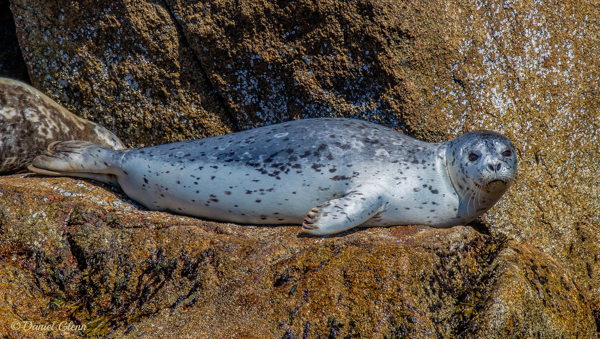

Seal Photos
Here are the pictures of seals used in this website:

Harbor Seal
A harbor seal sitting on a rock along the coastline. Harbor seals are very common in the North Atlantic and Pacific oceans.

Harp Seal Pup
A baby harp seal on the Arctic ice. Their white fluffy coat helps camouflage them in the snow when they are young.

Elephant Seals
Northern elephant seals resting on a beach in California. The big ones can weigh over 2,000 kg which is incredible!

Antarctic Fur Seal
An Antarctic fur seal. These seals almost went extinct from overhunting but now there are millions of them again!

California Sea Lion
California sea lions are very smart and playful. They are the seals you usually see at aquariums and zoos.

Hawaiian Monk Seal
A monk seal resting on a beach in Hawaii. There are only about 1,500 of these left in the wild so this is a very rare sight!

Pacific Walrus
A Pacific walrus showing off its huge tusks. Walrus tusks can grow over 1 meter long and both males and females have them.

Steller Sea Lion
The Steller Sea Lion is the biggest of all the eared seals. Unfortunately the western population in Alaska is endangered.

Leopard Seal
A close look at a leopard seal. You can see why they got their name, those spots look just like a leopard! These seals have very big mouths with sharp teeth.